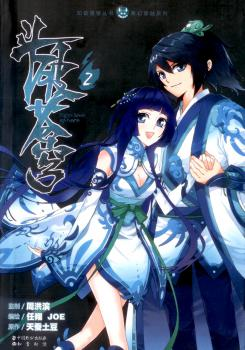

Trivias
Welcome to my trivia page! Here, you'll discover fun and fascinating facts about me. Dive in to learn more about my unique taste in music, movies, tv shows, and many other fun facts about me. Enjoy exploring! (REREAD AND MAKE IT BETTER)
1. My Top 5 Favourite Songs
I'm excited to share my top five favourite songs, each one of these songs holds special a meaning for me. Music has always been a huge part of my life, and these tracks perfectly capture the emotions and memories I cherish. Here's my personal list of my top 5 favourite songs.
| Ranking | Song Title | Artist | Genre |
|---|---|---|---|
| 1 | So Far Away | Red | Rock |
| 2 | Empty Cup | Citizen Soldier | Rock |
| 3 | Love Is Gone (Acoustic) | SLANDER, Dylan Matthew | Pop |
| 4 | Never Surrender | Skillet | Rock |
| 5 | Black Hole (Acoustic) | Grif | Pop |
Here's the song audio, I’d love for you to listen and experience them too, starting with my top pick:
1. So Far Away - Red
2. Empty Cup - Citizen Soldier
3. Love Is Gone (Acoustic) - SLANDER, Dylan Matthew
4. Never Surrender - Skillet
5. Black Hole (Acoustic) - Grif
2. My Top 5 Favourite Movies
I'm excited to show my top five favorite movies, each of which holds a special place in my heart, and i would always rewatch any of this films whenever I have some free time to spare. Movies have always been a major influence in my life, and these films encapsulate the emotions and memories I hold dear. Here's my personal list of my top five favorite films. I also included the movies trailer, I'd love for you to watch it and decide if you'd like to see the movie too
| Ranking | Movie Title | Year Of Released | Genre | Trailer |
|---|---|---|---|---|
| 1 | Oppenheimer | 2023 | Thriller, Historical, Drama | |
| 2 | I Want to Eat Your Pancreas | 2018 | Comedy, Romance, Drama | |
| 3 | A Silent Voice | 2016 | Romance, Drama | |
| 4 | The Terminal | 2004 | Comedy, Romance | |
| 5 | Annabelle: Creation | 2017 | Horror, Supenatural |
3. My Top 5 Favourite TV Shows
I'm excited to share my top five TV shows, each of which has a unique place in my heart. TV shows have always had a big impact on my life, and I would always rewatch these shows or just play it as background noise whenever I do some task. Here's my personal list of my top five favorite TV shows.
| Ranking | TV Show Title | Seasons | Year Of Released | Genre |
|---|---|---|---|---|
| 1 | Supernatural | 15 | 2005 | Action, Drama, Supernatural, Horror |
| 2 | Queen Of Tears | 1 | 2024 | Drama, Romance |
| 3 | Prison Break | 5 | 2005 | Action Thriller, Crime, Drama |
| 4 | Ghost Doctor | 1 | 2022 | Drama |
| 5 | Breaking Bad | 5 | 2008 | Crime, Thriller, Drama |
Here's the TV shows summary and its picture, I'd love for you to read the summary and decide if you'd like to see the TV show too.
| Ranking | TV Show Title | TV Show Poster | Summary |
|---|---|---|---|
| 1 | Supernatural |  |
"Supernatural" follows brothers Sam and Dean Winchester as they hunt demons, ghosts, monsters, and other supernatural beings. Their mission is to save people from the forces of evil while grappling with their own personal struggles and family secrets. With a mix of horror, drama, and humor, the show explores themes of loyalty, sacrifice, and the bond between siblings as the Winchesters face increasingly dangerous threats. |
| 2 | Queen Of Tears |  |
"Queen Of Tears" is a series depicts the crisis and rekindling of love between Hong Hae-in, a third-generation chaebol heiress of Queens Group, and Baek Hyun-woo, the son of farmers from Yongdu-ri, and their three years of marriage. |
| 3 | Prison Break |  |
"Prison Break" revolves around two brothers: Lincoln Burrows, who has been sentenced to death for a crime he did not commit and his younger brother Michael Scofield, a genius who devises an elaborate plan to help him escape prison by purposely getting himself imprisoned. |
| 4 | Ghost Doctor |  |
The series revolves around two doctors from extreme backgrounds, who have complete opposite personalities and medical skills: Cha Young-min (Rain) is a genius doctor and a high-skilled cardiothoracic surgeon, but is arrogant and selfish. Go Seung-tak (Kim-Bum), who although possesses excellent medical knowledge, is hindered by his lack of surgical knowledge and fear of performing surgery. One day, Young Min gets involved in an unexpected case, and due to this, his spirit possesses Seung-tak's body. |
| 5 | Breaking Bad |  |
"Breaking Bad" follows the story of Walter White, a high school chemistry teacher turned methamphetamine manufacturer. As Walter descends into the criminal underworld, he grapples with the consequences of his actions and the impact on his family. The show explores themes of morality, power, and the consequences of choices as Walter becomes increasingly entangled in the dangerous world of drug trafficking. |
4. Countries I Want To Visit
I'm thrilled to share the top five countries I dream of visiting. Traveling has always been a passion of mine, and these destinations are at the top of my bucket list. Each place offers a unique experience and a chance to explore new cultures and landscapes. Here's my personal list of the top five countries I want to visit.
| Ranking | Country | Capital | Continent |
|---|---|---|---|
| 1 | Japan | Tokyo | Asia |
| 2 | South Korea | Seoul | Asia |
| 3 | Austria | Vienna | Europe |
| 4 | Canada | Ottawa | North America |
| 5 | Italy | Rome | Europe |
5. Hobbies I Want To Explore
I'm eager to share the top five hobbies I'm looking forward to exploring. Engaging in new activities has always been a source of joy and growth for me, and these hobbies promise exciting experiences and opportunities for learning. Each hobby offers a unique way to unwind, express creativity, and connect with others. Here's my personal list of the top five hobbies I want to explore.
| Ranking | Hobby | Description |
|---|---|---|
| 1 | Photography | Photography is a hobby that allows you to capture moments, express creativity, and explore the world through a lens. Whether you're capturing landscapes, portraits, or abstract images, photography offers a unique way to document your experiences and share your perspective with others. |
| 2 | Painting | Painting is a creative outlet that allows you to express emotions, ideas, and experiences through color, texture, and form. Whether you're working with acrylics, watercolors, or oils, painting offers a therapeutic and meditative process that can help you relax and unwind. |
| 3 | Hiking | Hiking is a hobby that allows you to explore nature, challenge yourself physically, and enjoy the great outdoors. Whether you're hiking through mountains, forests, or national parks, hiking offers a chance to connect with nature, stay active, and experience breathtaking views. |
| 4 | Cooking | Cooking is a hobby that allows you to experiment with flavors, ingredients, and techniques to create delicious meals. Whether you're baking, grilling, or sautéing, cooking offers a creative and rewarding process that can help you unwind, de-stress, and share your culinary creations with others. |
| 5 | Badminton | Badminton is more than just a hobby; it's a dynamic and engaging sport that combines physical activity with fun. Playing badminton helps improve cardiovascular health, reflexes, and coordination. Whether playing casually with friends or competitively in tournaments, badminton offers a chance to stay active and enjoy the thrill of the game. The fast-paced nature of badminton makes it an exciting way to spend leisure time, while also providing numerous health benefits. |
6. My Top 5 Web-Novels
I'm excited to reveal the top five web novels that I'm eagerly looking forward to diving into. Exploring fictional worlds has always captivated me, and these stories are at the pinnacle of my reading list. Each novel promises a distinctive journey filled with rich storytelling and immersive worlds. Without further ado, here's my personal ranking of the top five web novels.
| Ranking | Title | Author | Chapters | Genre |
|---|---|---|---|---|
| 1 | The Great Ruler | Tian Can Tu Dou | 1560 | Action, Adventure, Fantasy, Martial Arts, Xuanhuan |
| 2 | Dragon Prince Yuan | Tian Can Tu Dou | 1503 | Action, Adventure, Fantasy, Martial Arts, Xuanhuan |
| 3 | Battle Through The Heavens | Tian Can Tu Dou | 1648 | Action, Adventure, Fantasy, Martial Arts, Xuanhuan |
| 4 | Againts The Gods | Mars Gravity | 2043 | Action, Adventure, Fantasy, Martial Arts, Xuanhuan, Romance |
| 5 | Wu Dong Qian Kun | Tian Can Tu Dou | 1309 | Action, Adventure, Fantasy, Martial Arts, Xuanhuan |
Here's the Web-Novel summary and its picture, I'd love for you to read the summary and decide if you'd like to read the Web-Novel too.
| Ranking | Web-Novel Title | Web-Novel Poster | Summary |
|---|---|---|---|
| 1 | The Great Ruler |  |
"The Great Thousand World" is a vast realm where multiple planes intersect, inhabited by various clans and lords. Heavenly Sovereigns emerge from the Lower Planes, each possessing legendary abilities that others aspire to attain in their quest for rulership. Across different territories, powerful figures like the Flame Emperor, the Martial Ancestor, the Emperor of a Hundred Battles, and the Immortal Owner wield immense authority. Amidst this landscape, a boy from the Northern Spiritual Realm embarks on a journey atop a Nine Netherworld Bird, seeking to determine his destiny and become a Great Ruler. The narrative revolves around the ambition and competition of individuals striving for supremacy in this diverse and vibrant world. |
| 2 | Dragon Prince Yuan |  |
In a world where Yin and Yang fuel the battle for destiny, the conflict between the Serpent and Sacred Saint Dragon emerges, with uncertainty over which will prevail. Zhou Yuan, prince of the Great Zhou Empire, is burdened by a fatal poison since birth. Fate leads him to a mysterious domain where he encounters intriguing characters. Amidst chaos and lightning, Zhou Yuan wields his pen while the dragon dances, symbolizing his quest for supremacy. Join Zhou Yuan as he navigates the whirlpool of destiny in pursuit of ultimate cultivation. |
| 3 | Battle Through The Heavens |  | In a land where no magic is present. A land where the strong make the rules and the weak have to obey. A land filled with alluring treasures and beauty, yet also filled with unforeseen danger. Three years ago, Xiao Yan, who had shown talents none had seen in decades, suddenly lost everything. His powers, his reputation, and his promise to his mother. What sorcery has caused him to lose all of his powers? And why has his fiancee suddenly shown up? |
| 4 | Againts The Gods |  |
Mythical Abode Mountain, Cloud’s End Cliff, the most dangerous of Azure Cloud Continent’s four deadly areas. Cloud’s End Cliff’s base is known as the Grim Reaper’s Cemetery. Over countless years, the number of people that have fallen off this cliff is too high to count. None of them, even three stronger than god masters, whose power could pierce the heavens, have been able to return alive. However, a boy that’s being chased by various people because he alone holds a priceless treasure jumps off the cliff, but instead of dying he wakes up in the body of a boy with the same name in another world! This is the story of a boy wielding the Sky Poison Pearl, cultivating the strength to oppose heaven and earth, a lord overlooking the world! |
| 5 | Wu Dong Qian Kun |  |
In the Great Yan Empire, strength commands respect, particularly within the influential Lin Clan. Lin Dong, from a banished branch of the Lin Clan, witnesses his father's defeat and his family's suffering at the hands of Lin Langtian, a prodigy of the main clan. Driven by revenge and armed only with determination, Lin Dong seeks to avenge his family's honor. However, his path takes an unexpected turn when he discovers a mysterious stone talisman, leading him toward a destiny beyond his wildest imagination. |